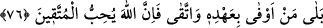

bize bir yol, azap ve muâheze yoktur” demeleri sebebiyledir. Âyette “sorumluluk (yol)
yoktur” denerek, mesûliyetin olmadığı söylenmekte ve böylece emânetin istenmeyeceği
vurgulanmış olmaktadır. Çünkü emâneti isteyen, ancak istediğine ulaşabileceği yolu
bulabilirse emâneti isteyebilir.
Ümmî anasına mensûp demektir. Hz. Peygamber (s.a.)’e de “ümmî” denmiştir, çünkü
kendisi yazı yazamazdı. Yazı yazamayanların annelerine nisbet edilmesinin sebebi
şudur: Çünkü bir kişinin anası onun aslıdır. Yazı yazamayan kişi ise asıl hâli olan
yazamama özelliği üzere bulunmaktadır.
Hz. Peygamber (s.a.)’e “ümmî” denmesinin sebebi olarak; “O’nun Ümmü’l-kurâ
olan Mekke vatandaşı olması” da gösterilmektedir.
Bu hukuka riâyetsizliğin kendi kitaplarında bulunduğunu iddiâ ederek, yalancı
olduklarını, Allah’a iftirâ ettiklerini “Allah’a karşı bile bile yalan söylüyorlar.” sözü
ifade etmektedir. Ehl-i Kitap, kendilerine karşı olanlara zulmetmeyi helal sayarlar ve
“Tevrat’ta bu kişilere zulmetmenin haram kılınmadığını” söyleyerek Allah’a karşı yalan
uydururlardı. Çünkü emâneti yerine vermek, bütün dinlere göre farzdır. Başkasının
malını elinde tutmak, başkasına zarar vermek ve emânete hıyânet etmek de tüm dinlerde
haramdır.
76. Hayır! (Gerçek onların dediği değil.) Her kim sözünü yerine getirir ve
kötülükten sakınırsa, bilsin ki Allah sakınanları sever.
“Hayır” kelimesi, kitap ehlinin olmadığını söyledikleri şeyin, aslında var olduğunu
göstermektedir. Yani ümmîler, kitap ehlinden haklarını alma yoluna sahiptirler. “Kim
sözünü yerine getirir ise” sözü, her kim emânet edenlerin ahdini tam olarak edâ ederse
ya da: “Her kim, Allah’ın, Hz. Muhammed (s.a.)’e îman ve emânete hıyânet etmeme
konusunda Tevrat’ta Kitap ehlinden almış olduğu ahdi tam olarak yerine getirirse”
demektir.
(Şirk ve hıyânetten) “korunursa”; şart cümlesinin cevabı: “Allah da zulüm, hıyânet
ve verdiği sözü, yerine getirmemekten korunanları sever” cümlesidir. Yani “Allah da
onu sever” demektir. Bu durumda, “korunanların” umûmî olarak zikredilmesi, şartın
cevabındaki “kim” sözüne giden zamir yerine kaimdir. Buradaki “korunma” (takvâ)
ifadesi, Hz. Muhammed (s.a.)’e ve onun nazarî ve amelî güçleri tamamlamak için
getirdiği dine îman edeceklerine dâir Allah’a verdikleri sözü yerine getirmeyi de içine
almaktadır.
Âyet-i kerîme, ahde vefânın önemli bir iş olduğunu göstermektedir. Çünkü bütün
ibâdet ve tâatler mutlaka şu iki kısımdan birine girer: Allah’ın emrini yüce bilmek ve
Allah’ın yarattıklarına şefkatle davranmak. Ahde vefâ ise, her iki kısmı da ilgilendirir.